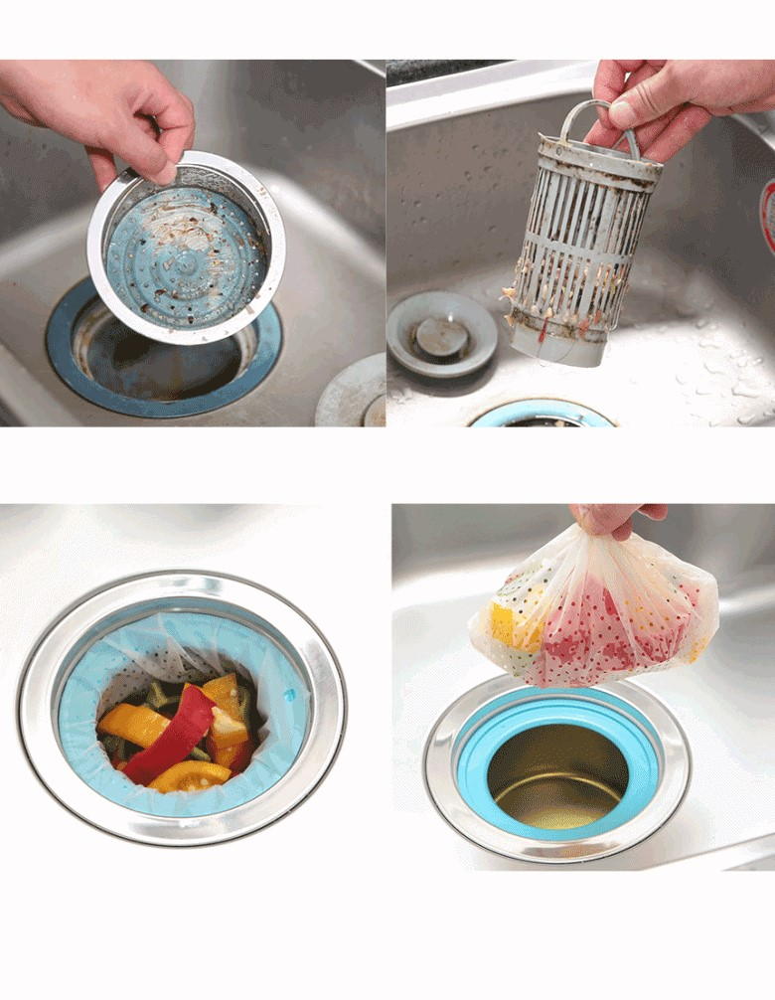
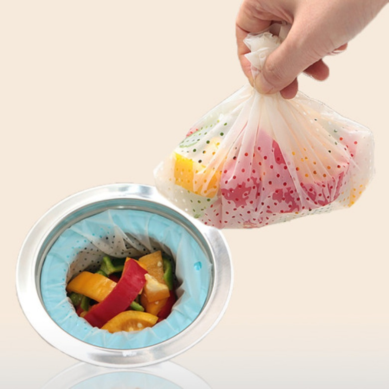
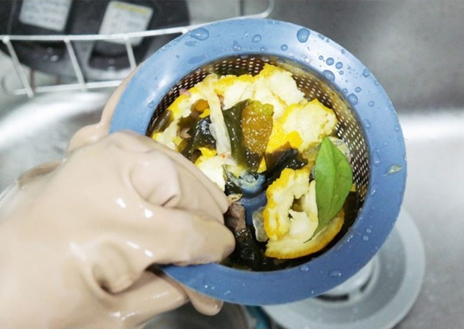
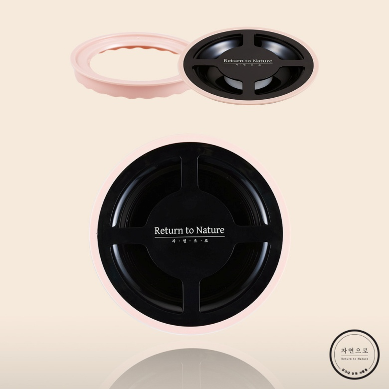
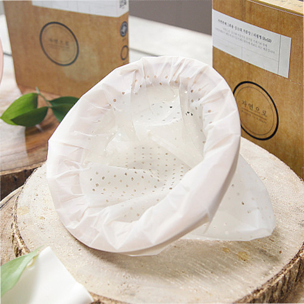
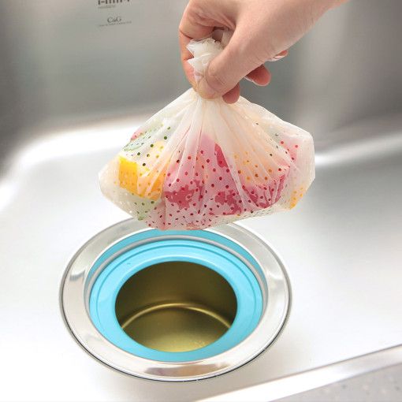
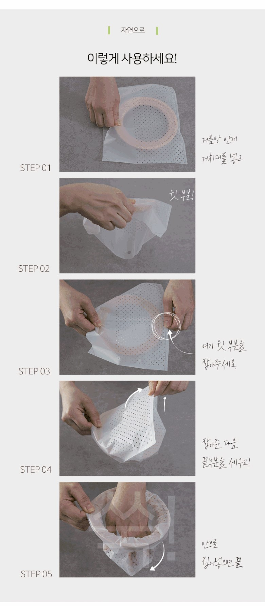
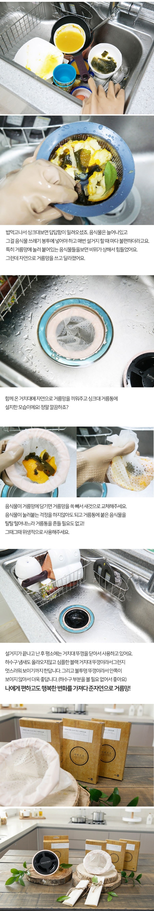
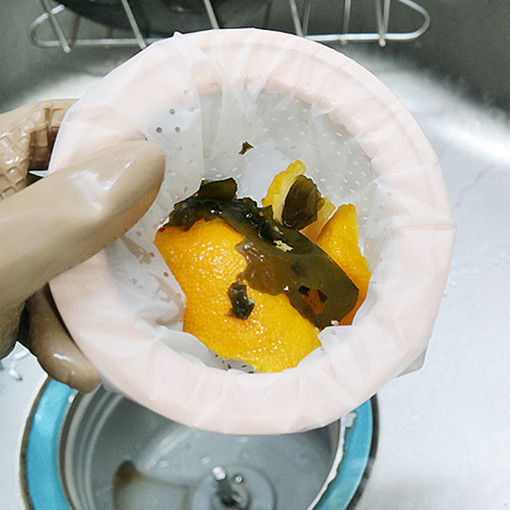
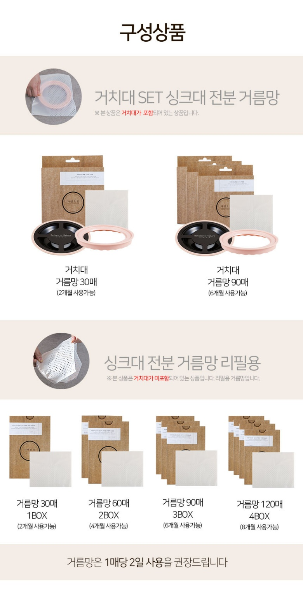

기존 거름통

- 꺼내기
- 털기
- 낀 찌꺼기 떼기
- 거름통 씻기
찌꺼기가 거름통 바닥과 틈새에 남습니다.
자연으로 싱크대 거름망
설거지는 끝났는데, 아직 배수구 거름통을 뒤집어 털고 있나요?

전용 링에 미세 타공 거름망을 씌워 두면 음식물 찌꺼기가 망 안에 모입니다. 찌꺼기가 차면 거름통을 흔들어 털고 틈새까지 씻는 대신, 거름망만 들어 올려 새것으로 바꾸세요.
결제는 쿠팡에서 옵션과 가격을 확인한 뒤에 결정하세요.
구매 전, 우리 집 배수구 크기와 거치대(전용 링) 포함 여부를 확인해 주세요.
이 포스팅은 쿠팡 파트너스 활동의 일환으로, 이에 따른 일정액의 수수료를 제공받습니다.
설거지의 진짜 마지막 단계
그릇을 다 씻고 나면 찌꺼기가 가득한 거름통이 남습니다. 음식물 봉투 위에서 몇 번을 털어도 밥알과 채소 조각은 틈새에 붙어 있고, 결국 손으로 떼어낸 뒤 거름통까지 다시 씻게 됩니다.

찌꺼기가 눌어붙은 거름통을 배수구에서 꺼냅니다.
음식물 봉투 위에서 찌꺼기가 떨어질 때까지 흔듭니다.
틈새에 낀 찌꺼기를 떼어내고 거름통을 씻습니다.
꺼내고, 털고, 다시 씻는 세 번의 수고. 거름망 하나를 들어 올리는 일로 바꿀 수 있습니다.
털지 않아도 되는 이유
거름망을 씌운 전용 링을 배수구에 걸칩니다. 물은 구멍으로 빠지고 찌꺼기는 망 안에 모입니다. 찌꺼기가 차면 망을 들어 올려 새것으로 바꾸면 됩니다. 찌꺼기가 거름통이 아니라 거름망에 담기기 때문입니다.

찌꺼기가 거름통 바닥과 틈새에 남습니다.
찌꺼기가 망에 담긴 채 함께 올라옵니다.
거름통을 닦는 마무리에서, 거름망을 바꾸는 마무리로.

거름망 입구를 둥글게 벌려 잡고, 배수구에 걸쳐집니다.

구멍으로 물은 빠지고, 음식물 찌꺼기는 망 안에 남습니다.

찌꺼기가 차면 망 입구를 모아 들어 올리고, 새 망을 씌웁니다.
사용 순서로 확인하세요
판매 상세페이지가 안내하는 방법 그대로입니다. 거름망 안에 전용 링을 넣고, 위로 남은 부분을 링 안쪽으로 접어 넣으면 준비가 끝납니다.
STEP 1

거름망 안에 전용 링을 넣습니다.
STEP 2
링 위로 남은 거름망의 윗부분을 확인합니다.
STEP 3
윗부분의 끝을 두 손으로 잡습니다.
STEP 4
잡은 끝부분을 위로 세웁니다.
STEP 5
세운 끝부분을 링 안쪽으로 집어넣으면 끝입니다.

거름망을 씌운 링을 배수구에 걸쳐 둡니다.

링째 들어 올려 거름망을 빼고, 새 거름망을 같은 순서로 씌웁니다.
1매당 2일
판매자 권장 사용 주기
30매 = 약 2개월분
판매 상세페이지의 사용 기간 안내
30 · 60 · 90 · 120매
리필용 수량 구성 (거치대 SET는 30매·90매)

판매 상세페이지 안내 기준입니다. 실제 판매 옵션과 수량은 쿠팡 상품 페이지에서 확인해 주세요.
구매 전에 확인하세요
배수구 크기, 구매 옵션, 지역 배출 기준. 이 세 가지를 먼저 확인하면 잘못 고르는 일을 줄일 수 있습니다.
일반 싱크대의 큰 배수구에 걸쳐 쓰는 제품입니다. 구매 전에 쿠팡 상품 정보에서 링 크기를 확인하고, 우리 집 배수구 안쪽 지름과 비교해 주세요. 지름이 작은 소형 배수구에는 맞지 않을 수 있습니다.
옵션마다 다릅니다. 판매 상세페이지에는 거치대가 포함된 ‘거치대 SET’와 거름망만 들어 있는 ‘리필용’이 따로 안내되어 있습니다. 처음 구매한다면 ‘거치대 SET’를, 링이 이미 있다면 ‘리필용’을 고르세요. 결제 전에 선택한 옵션명을 한 번 더 확인해 주세요.
지역마다 다릅니다. 생분해 거름망을 음식물 쓰레기와 함께 배출할 수 있는지는 지자체와 공동주택의 처리 방식에 따라 달라집니다. 버리기 전에 거주 지역의 음식물 쓰레기 배출 기준을 확인해 주세요. 함께 버릴 수 없는 지역이라면 내용물만 음식물 쓰레기로 비우고, 거름망은 지역 안내에 따라 따로 배출하세요.
다음 설거지부터
거름망을 씌운 전용 링을 배수구에 걸쳐 두고, 찌꺼기가 차면 거름망만 들어 올려 바꾸면 됩니다. 꺼내고, 털고, 다시 씻던 마무리가 줄어듭니다.
거치대(링·덮개) + 거름망 30매 또는 90매
처음 구매한다면
거름망 30 · 60 · 90 · 120매
링이 이미 있다면
판매 상세페이지 안내 기준입니다.
버튼을 눌러도 바로 결제되지 않습니다. 쿠팡에서 옵션과 가격을 확인한 뒤 구매를 결정하세요.
이 포스팅은 쿠팡 파트너스 활동의 일환으로, 이에 따른 일정액의 수수료를 제공받습니다.